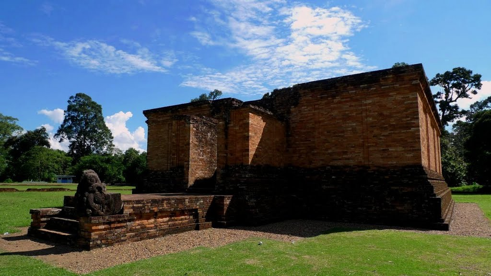

Jambi
Muara Jambi Temple
Muara Jambi Temple is considered one of the richest archaeological sites on the island of Sumatra. The eight temple-like structures appear to be Buddhist, and were probably built around the 14th century. Archaelogists conclude that the site was the center of Old Jambi, the capital of ancient Malay kingdom which reigned supreme about ten centuries ago. The capital was sieged and destroyed in 1377 by armies from Burma. For centuries, the site had been lost and forgotten deep in the jungle, only to be rediscovered in 1920 by a British military expedition team. Muara Jambi temple complex covers an area of 12 km2, along the side of Batanghari river. There are eight main temples in the complex. All of them are located in the center area, fortified by walls. Three of them are already renovated. In 1982, a 32-centimeters tall female bronze statue was found at Koto Kandis, in the Muara Sabak sub district. It is believed to be the goddest Laksmi, holding a lotus bud in her left. In addition to the archaelogical sites, many visitors find the riverside an ideal recreation and picnic spot.
.jpg)
Kerinci Lake and Mountain
Mount Kerinci is the highest mountain on the island of Sumatra and it is popular with mountain climbers. The nearest village and climber’s base is Kersik Tuo, near Kayu Aro, Kerinci. The route is marked by signs, posted at half kilometer intervals. Nearly 800 meters above sea level, surrounded by boundless stretches of bright, green rice paddies as far as the eye can see; against a backdrop of gently sloping mountains, seemingly a shade of blue; here lies a vast expanse of calm, clear waters, dotted sporadically by small fishing boats gliding along its surface. This isLake Kerinci, the largest of 15 lakes in the Kerinci district and the second largest in Sumatra after Lake Toba. It spans 4,200 hectares and reaches a depth of 110 meters. A number of stone megalithic relics have been discovered in the small villages scattered around the shore of Kerinci, some dating back to 2,000 years ago. The presence of these ancient standing stones shows this area as one that has been inhabited for thousands of years. The lake is located at the foot of Raja Mountain in the Kerinci District, Jambi Province, on the island of Sumatra. The beauty of Kerinci has long been associated with legends. One such legend tells of twin orphan brothers, Calupat and Calungga, who found shelter at the foot ofMount Kerinci. Two precious stones had been given to them by their late parents; a ruby and a pearl. One day, while hunting alone, Calungga came upon a giant egg. This egg was meant to be brought home and shared with his younger brother, Calupat, but instead, Calungga ate the egg alone. Immediately afterwards, Calungga was overcome with extreme thirst. He ran to the river which flowed near Mount Kerinciand drank and drank until the river ran dry.But yet his thirst was not quenched. Suddenly, his body began to change. He grew larger, longer, developing golden scales along the length of his body. Calungga had transformed into a giant dragon with the gem stones he had been given embedded in his head. Dragons, as we know, are magical creatures, and so to test his powers, Calungga appealed to the gods of the earth. He wound his snake-like body into a large circle and begged the gods to fill that shape with water. The gods obliged, creatingLake Bento at the foot of Mount Kerinci. Unable to live alone, Calupat asked the dragon to bring residents to his valley. A powerful wind then blew against Lake Bento forming an estuary and causing the river to flow downstream to the east. Lake Bento was again left as an empty valley, and a new river was created: Lake Kerinci. With the presence of the lake, people began to settle around its banks. Upon visiting this spot today, you can still see the shape of Calupat sitting upon the head of a dragon.